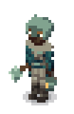
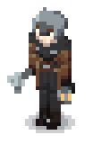
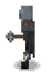
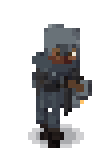

Lantern Lieutenant
Lantern Lieutenant is an elite of Port Ossery (level 20).
Lantern Lieutenant is an elite of Port Ossery (level 20).
In the game
In the game the Lantern Lieutenant is level 20, elite (a group's fight). It is found in The Cliff Stair. It can drop Lantern Cudgel (always), Bravo's Breeches (25%) and Lantern Hood (25%).
Quests
Quests that ask for it: The Bought Lieutenant.
Gallery







